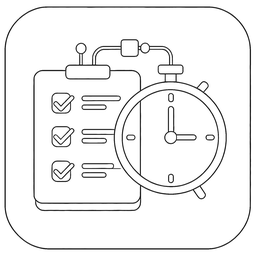

从一条任务，到可执行的计划
创建、编辑、查询、排序、分组与重复任务都留在熟悉的 Markdown 中，事情的内容与上下文无需离开 vault。

Tasks DatetimeObsidian task plugin · independent fork
把任务、时间与行为放进同一套 Markdown 工作流：先明确要做什么，再安排何时发生，最后用优先级和重复规则把计划变成可持续的行动。
订生日蛋糕 准备
布置晚餐 计划
为妈妈庆生 🎯 重要
Markdown 保留完整时刻；界面可只显示日期。
独立维护的 MIT 衍生项目
感谢上游的长期维护；本项目独立承担自己的设计与支持
一个朴素的原则
任务的 Markdown 是唯一事实来源。无论界面现在显示日期还是时间，已写入的时、分、秒都被完整保留。切换视图是为了专注，不是为了遗忘。
这让日程安排、完成记录、重复任务和查询结果能够表达同一件事：事情到底在什么时刻发生，而不仅是哪一天。
在 Markdown 里工作
创建、编辑、查询、排序、分组与重复任务都留在熟悉的 Markdown 中，事情的内容与上下文无需离开 vault。
任务日期统一保存为 YYYY-MM-DD HH:mm:ss；创建、编辑与状态变更使用同一规则，界面仍可只显示日期。
用重要性与紧急性选择 🔥、🎯、⚡ 或 💤，结合重复规则与完成状态，让注意力和行动顺序有据可循。
历史数据更新命令会将旧日期补为 00:00:00，只更新不完整字段；可重复执行，不会重写已有时间。
可核验的边界
插件通过 Obsidian Vault API 读取和修改当前打开 vault 中的任务 Markdown、插件设置及相关元数据，用于渲染、查询、创建、编辑与统计。
阅读完整隐私与权限说明当前分发方式
从项目 Release 下载 main.js、manifest.json 与 styles.css。
在 vault 中创建 .obsidian/plugins/tasks-datetime/。
复制三个文件并在 Obsidian 中启用 Tasks Datetime。
插件 ID 为 tasks-datetime。该项目目前不在 Obsidian Community Plugins 目录中；请仅从本项目的 GitHub Releases 获取构建文件。
来源、敬意与责任
Tasks Datetime 基于 obsidian-tasks-group/obsidian-tasks 修改而来。上游项目多年沉淀出的 Markdown 兼容性、任务查询、状态体系与社区维护，是本项目得以开始的基础。我们由衷感谢每一位贡献者和维护者。
本项目保留上游 MIT 许可与所需版权声明，并将日期优先工作流视作兼容性基线。这里新增的时间表达、交互与后续维护，由 Tasks Datetime 独立负责；它不是官方替代品，也不代表或获得上游项目认可。
Tasks Datetime 延续上游项目长期演进的 8.x 版本脉络。它不是从零搭建的新项目，而是在成熟、经验证的基础上继续解决时间表达的问题。
站在巨人的肩膀上，吃水不忘挖井。我们感谢每一位为上游代码、文档与社区投入心力的贡献者，也会为这一份延伸承担独立维护的责任。